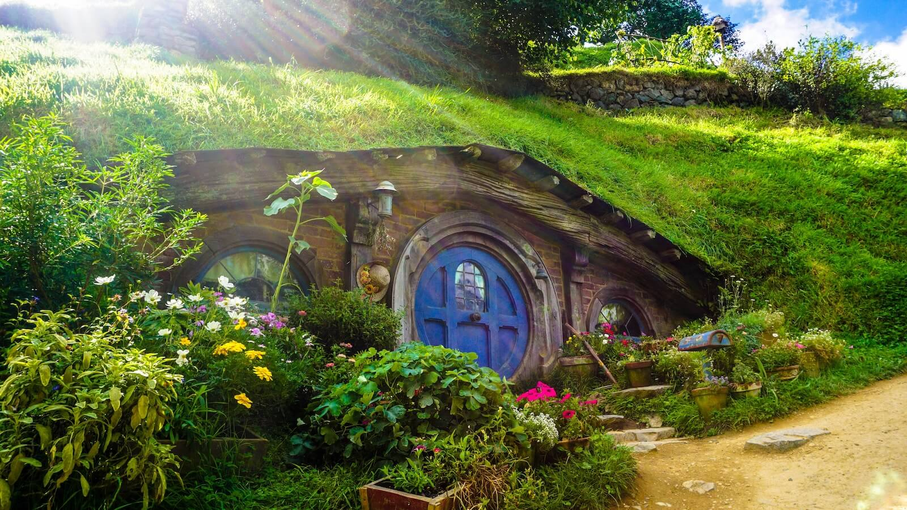
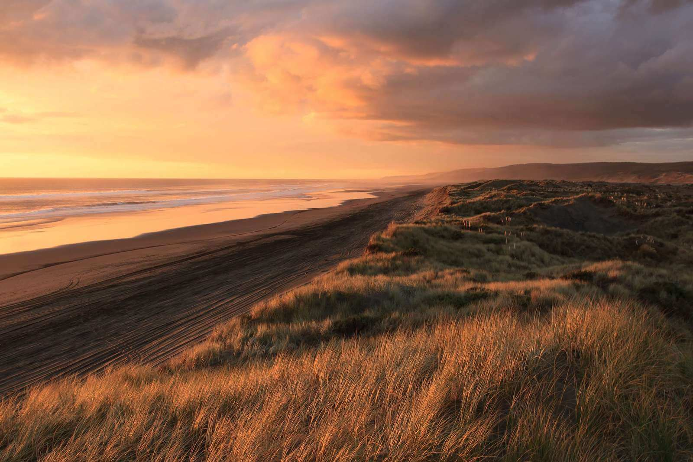

Click the image, or Tab to the button and press Enter; Escape unzooms.
Zoom in and watch the small image be replaced by the large one.
Zoom the SVG; its gradient must still render in the modal clone.
Zoom, then resize the window across 700px to switch sources.
Hover or focus the image: the zoom and unzoom icons are replaced.

Tab to the button supplied by the page and press Enter.
This image must not zoom by click or keyboard.
The image sits
Zoom: the overlay fades slowly to a purple tint with a purple button.

Tick the box to zoom and untick to unzoom; zooming by click or Escape goes through the box too.